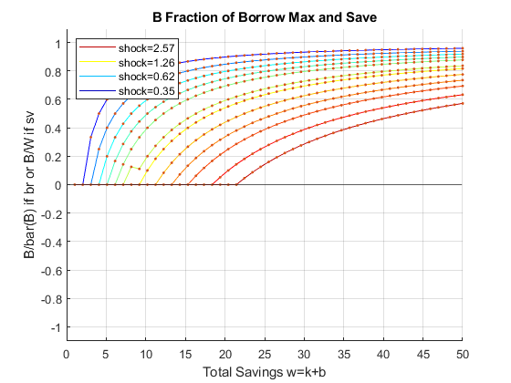
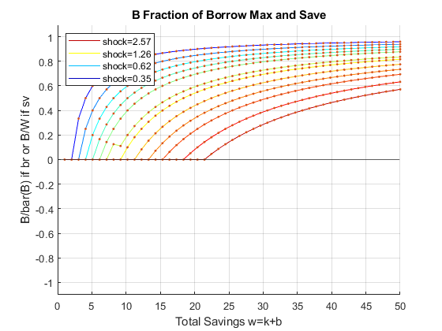

Contents
- FF_WKZ_EVF solves the k' vs b' problem given aggregate savings
- Default
- Parse Parameters
- Integrate E(V(coh(k',b'), z')|z, w)
- Reshape E(V(coh,z'|z,w)) to allow for maxing
- Maximize max_{k'}(E(V(coh(k',b'=w-k'),z'|z,w)) optimal value and index
- Reindex K' and B' Choices for each State at the Optimal w'=k'+b' choice
- Generate Optimal K' and B' on w(coh) percentage grid from w level grid
- Graph
- Graph 1, V and EV
- Graph 2, max(EV)
- Graph 3, max(EV), color regions, borrow save
- Graph 4, Optimal K' and B' Levels
back to Fan's Dynamic Assets Repository Table of Content.
function [mt_ev_condi_z_max, mt_ev_condi_z_max_idx, mt_ev_condi_z_max_kp, mt_ev_condi_z_max_bp] = ff_wkz_evf(varargin)
FF_WKZ_EVF solves the k' vs b' problem given aggregate savings
Rather than solving the two asset problem in one shot. We can separate the problem into two stages. This is the second stage of the problem. Here we find the optimal k' choice given w=k'+b'. max_{k'}(E(V(coh(k',b'=w-k'),z'|z,w)) is the maximization problem. Conditional on shock and w. Note that this problem is not conditional on cash-on-hand today, but conditional on w. We do not need to know the cash-on-hand in the current period to find the optimal k' choice conditional on w.
This means we can solve for the optimal relative allocation of risky and safe asset conditional on total savings. Note that we still need the value function mt_val, which is required to find EV.
@param mt_val matrix state_n ((I-1)*J/2+I) by shock_n. This is the value matrix each row is a feasible reachable state given the choice vectors/matrix and each column is a shock state.
@param param_map container parameter container
@param support_map container support container
@param armt_map container container with states, choices and shocks grids that are inputs for grid based solution algorithm
@return mt_ev_condi_z_max matrix choice_w_n by shock_n max_{k'}(E(V(coh(k',b'=w-k'),z'|z,w)) conditional on z and w, at the optimal k' choice (w=k'+b') what is the expected utility? This is the value result from the 2nd stage problem. Note the result integrates over z'.
@return mt_ev_condi_z_max_idx matrix choice_w_n by shock_n this is the argmax from max_{k'}(E(V(coh(k',b'=w-k'),z'|z,w)). Given the vector of k' choices, which index maximized conditional on z and w integrating over z'/
@return mt_ev_condi_z_max_kp matrix choice_w_n by shock_n the k' choice at max_{k'}(E(V(coh(k',b'=w-k'),z'|z,w))
@return mt_ev_condi_z_max_bp matrix choice_w_n by shock_n the b'=w-k' choice at max_{k'}(E(V(coh(k',b'=w-k'),z'|z,w))
@example
@include
Default
params_len = length(varargin); bl_input_override = 0; if (params_len == 5) bl_input_override = varargin{5}; end if (bl_input_override) % override when called from outside [mt_val, param_map, support_map, armt_map, ~] = varargin{:}; else clear all; close all; % Not default parameters, but parameters that generate defaults it_param_set = 4; bl_input_override = true; [param_map, support_map] = ffs_akz_set_default_param(it_param_set); support_map('bl_graph_evf') = true; support_map('bl_display_evf') = true; [armt_map, func_map] = ffs_akz_get_funcgrid(param_map, support_map, bl_input_override); % 1 for override % Generating Defaults params_group = values(armt_map, {'ar_a_meshk', 'ar_k_mesha', 'ar_z'}); [ar_a_meshk, ar_k_mesha, ar_z] = params_group{:}; params_group = values(func_map, {'f_util_standin'}); [f_util_standin] = params_group{:}; mt_val = f_util_standin(ar_z, ar_a_meshk, ar_k_mesha); end
Parse Parameters
params_group = values(armt_map, {'mt_z_trans', 'ar_z',...
'ar_w', 'mt_k_wth_na', 'ar_k_mw_wth_na', 'ar_a_mw_wth_na'});
[mt_z_trans, ar_z, ar_w, mt_k_wth_na, ar_k_mw_wth_na, ar_a_mw_wth_na] = params_group{:};
params_group = values(param_map, {'it_z_n', 'fl_nan_replace', 'fl_b_bd'});
[it_z_n, fl_nan_replace, fl_b_bd] = params_group{:};
params_group = values(support_map, {'bl_graph_onebyones','bl_display_evf', 'bl_graph_evf'});
[bl_graph_onebyones, bl_display_evf, bl_graph_evf] = params_group{:};
params_group = values(support_map, {'bl_img_save', 'st_img_path', 'st_img_prefix', 'st_img_name_main', 'st_img_suffix'});
[bl_img_save, st_img_path, st_img_prefix, st_img_name_main, st_img_suffix] = params_group{:};
% append function name
st_func_name = 'ff_wkz_evf';
st_img_name_main = [st_func_name st_img_name_main];
Integrate E(V(coh(k',b'), z')|z, w)
Each column for a different state z, each value E(V(coh,z')|z) integrated already Here, each column is a current z, more to right higher EV dim(mt_ev_condi_z): Q by M Note that: mt_ev_condi_z = mt_val*mt_z_trans' is a mistake, that would be what we do in the ffs_akz_set_functions code where we loop over current z, and for each current z, grab out a particular row from the mt_z_trans that corresponds to a current shock's transition into all future states.
here, each column of mt_val corresponds to a state z, think of that as future state z. The input mt_val is V(coh, z), we need to integrate to get E(V(coh,z')|z).
mt_ev_condi_z = mt_val*mt_z_trans'; if(bl_display_evf) disp('mt_ev_condi_z: Q by M'); disp(size(mt_ev_condi_z)); summary(array2table(mt_ev_condi_z)); end
mt_ev_condi_z: Q by M
1275 15
Variables:
mt_ev_condi_z1: 1275×1 double
Values:
Min -0.81272
Median 3.5842
Max 3.9521
mt_ev_condi_z2: 1275×1 double
Values:
Min -0.81272
Median 3.5886
Max 3.9533
mt_ev_condi_z3: 1275×1 double
Values:
Min -0.81272
Median 3.5923
Max 3.9548
mt_ev_condi_z4: 1275×1 double
Values:
Min -0.81272
Median 3.5971
Max 3.9567
mt_ev_condi_z5: 1275×1 double
Values:
Min -0.81272
Median 3.6021
Max 3.9589
mt_ev_condi_z6: 1275×1 double
Values:
Min -0.81272
Median 3.6063
Max 3.9615
mt_ev_condi_z7: 1275×1 double
Values:
Min -0.81272
Median 3.6112
Max 3.9647
mt_ev_condi_z8: 1275×1 double
Values:
Min -0.81272
Median 3.6166
Max 3.9684
mt_ev_condi_z9: 1275×1 double
Values:
Min -0.81272
Median 3.6269
Max 3.9729
mt_ev_condi_z10: 1275×1 double
Values:
Min -0.81272
Median 3.6386
Max 3.9782
mt_ev_condi_z11: 1275×1 double
Values:
Min -0.81272
Median 3.6488
Max 3.9844
mt_ev_condi_z12: 1275×1 double
Values:
Min -0.81272
Median 3.6622
Max 3.9919
mt_ev_condi_z13: 1275×1 double
Values:
Min -0.81272
Median 3.6752
Max 4.0006
mt_ev_condi_z14: 1275×1 double
Values:
Min -0.81272
Median 3.6865
Max 4.0106
mt_ev_condi_z15: 1275×1 double
Values:
Min -0.81272
Median 3.6915
Max 4.0212
Reshape E(V(coh,z'|z,w)) to allow for maxing
dim(mt_ev_condi_z): IxJ by M
[it_mt_bp_rown, it_mt_bp_coln] = size(mt_k_wth_na); mt_ev_condi_z_full = zeros(it_mt_bp_rown*it_mt_bp_coln, it_z_n); mt_ev_condi_z_full(~isnan(ar_k_mw_wth_na),:) = mt_ev_condi_z; mt_ev_condi_z_full(isnan(ar_k_mw_wth_na),:) = fl_nan_replace; mt_ev_condi_z_full = reshape(mt_ev_condi_z_full, [it_mt_bp_rown, it_mt_bp_coln*it_z_n]);
Maximize max_{k'}(E(V(coh(k',b'=w-k'),z'|z,w)) optimal value and index
Maximization, find optimal k'/b' combination given z and w=k'+b'
[ar_ev_condi_z_max, ar_ev_condi_z_max_idx] = max(mt_ev_condi_z_full); mt_ev_condi_z_max = reshape(ar_ev_condi_z_max, [it_mt_bp_coln, it_z_n]); mt_ev_condi_z_max_idx = reshape(ar_ev_condi_z_max_idx, [it_mt_bp_coln, it_z_n]); if(bl_display_evf) disp('mt_ev_condi_z_full: J by IxM'); disp(size(mt_ev_condi_z_full)); % disp(mt_ev_condi_z_full); disp('mt_ev_condi_z_max: I by M'); disp(size(mt_ev_condi_z_max)); summary(array2table(mt_ev_condi_z_max)); disp('mt_ev_condi_z_max_idx: I by M'); disp(size(mt_ev_condi_z_max_idx)); % disp(mt_ev_condi_z_max_idx); end
mt_ev_condi_z_full: J by IxM
50 750
mt_ev_condi_z_max: I by M
50 15
Variables:
mt_ev_condi_z_max1: 50×1 double
Values:
Min -0.81272
Median 3.2739
Max 3.9521
mt_ev_condi_z_max2: 50×1 double
Values:
Min -0.81272
Median 3.2763
Max 3.9533
mt_ev_condi_z_max3: 50×1 double
Values:
Min -0.81272
Median 3.2793
Max 3.9548
mt_ev_condi_z_max4: 50×1 double
Values:
Min -0.81272
Median 3.283
Max 3.9567
mt_ev_condi_z_max5: 50×1 double
Values:
Min -0.81272
Median 3.2873
Max 3.9589
mt_ev_condi_z_max6: 50×1 double
Values:
Min -0.81272
Median 3.2924
Max 3.9615
mt_ev_condi_z_max7: 50×1 double
Values:
Min -0.81272
Median 3.2985
Max 3.9647
mt_ev_condi_z_max8: 50×1 double
Values:
Min -0.81272
Median 3.3058
Max 3.9684
mt_ev_condi_z_max9: 50×1 double
Values:
Min -0.81272
Median 3.3143
Max 3.9729
mt_ev_condi_z_max10: 50×1 double
Values:
Min -0.81272
Median 3.3245
Max 3.9782
mt_ev_condi_z_max11: 50×1 double
Values:
Min -0.81272
Median 3.3365
Max 3.9844
mt_ev_condi_z_max12: 50×1 double
Values:
Min -0.81272
Median 3.3507
Max 3.9919
mt_ev_condi_z_max13: 50×1 double
Values:
Min -0.81272
Median 3.3671
Max 4.0006
mt_ev_condi_z_max14: 50×1 double
Values:
Min -0.81272
Median 3.3857
Max 4.0106
mt_ev_condi_z_max15: 50×1 double
Values:
Min -0.81272
Median 3.4055
Max 4.0212
mt_ev_condi_z_max_idx: I by M
50 15
Reindex K' and B' Choices for each State at the Optimal w'=k'+b' choice
The K' and B' Optimal Choices Associated with EV opti dim(mt_ev_condi_z_max_kp): I by M
ar_add_grid = linspace(0, it_mt_bp_rown*(it_mt_bp_coln-1), it_mt_bp_coln); mt_ev_condi_z_max_idx = mt_ev_condi_z_max_idx + ar_add_grid'; if(bl_display_evf) disp('mt_ev_condi_z_max_idx: I by M'); disp(size(mt_ev_condi_z_max_idx)); % disp(mt_ev_condi_z_max_idx(1:it_mt_bp_coln,:)); end mt_ev_condi_z_max_kp = reshape(ar_k_mw_wth_na(mt_ev_condi_z_max_idx(:)), [it_mt_bp_coln, it_z_n]); mt_ev_condi_z_max_bp = reshape(ar_a_mw_wth_na(mt_ev_condi_z_max_idx(:)), [it_mt_bp_coln, it_z_n]); if(bl_display_evf) disp('mt_ev_condi_z_max_kp: I by M'); disp(size(mt_ev_condi_z_max_kp)); summary(array2table(mt_ev_condi_z_max_kp)); disp('mt_ev_condi_z_max_bp: I by M'); disp(size(mt_ev_condi_z_max_bp)); summary(array2table(mt_ev_condi_z_max_bp)); end
mt_ev_condi_z_max_idx: I by M
50 15
mt_ev_condi_z_max_kp: I by M
50 15
Variables:
mt_ev_condi_z_max_kp1: 50×1 double
Values:
Min 0
Median 2.0408
Max 2.0408
mt_ev_condi_z_max_kp2: 50×1 double
Values:
Min 0
Median 2.0408
Max 2.0408
mt_ev_condi_z_max_kp3: 50×1 double
Values:
Min 0
Median 3.0612
Max 3.0612
mt_ev_condi_z_max_kp4: 50×1 double
Values:
Min 0
Median 3.0612
Max 3.0612
mt_ev_condi_z_max_kp5: 50×1 double
Values:
Min 0
Median 4.0816
Max 4.0816
mt_ev_condi_z_max_kp6: 50×1 double
Values:
Min 0
Median 4.0816
Max 4.0816
mt_ev_condi_z_max_kp7: 50×1 double
Values:
Min 0
Median 5.102
Max 5.102
mt_ev_condi_z_max_kp8: 50×1 double
Values:
Min 0
Median 6.1224
Max 6.1224
mt_ev_condi_z_max_kp9: 50×1 double
Values:
Min 0
Median 8.1633
Max 8.1633
mt_ev_condi_z_max_kp10: 50×1 double
Values:
Min 0
Median 9.1837
Max 9.1837
mt_ev_condi_z_max_kp11: 50×1 double
Values:
Min 0
Median 11.224
Max 11.224
mt_ev_condi_z_max_kp12: 50×1 double
Values:
Min 0
Median 13.265
Max 13.265
mt_ev_condi_z_max_kp13: 50×1 double
Values:
Min 0
Median 15.306
Max 15.306
mt_ev_condi_z_max_kp14: 50×1 double
Values:
Min 0
Median 18.367
Max 18.367
mt_ev_condi_z_max_kp15: 50×1 double
Values:
Min 0
Median 21.429
Max 21.429
mt_ev_condi_z_max_bp: I by M
50 15
Variables:
mt_ev_condi_z_max_bp1: 50×1 double
Values:
Min 0
Median 22.959
Max 47.959
mt_ev_condi_z_max_bp2: 50×1 double
Values:
Min 0
Median 22.959
Max 47.959
mt_ev_condi_z_max_bp3: 50×1 double
Values:
Min 0
Median 21.939
Max 46.939
mt_ev_condi_z_max_bp4: 50×1 double
Values:
Min 0
Median 21.939
Max 46.939
mt_ev_condi_z_max_bp5: 50×1 double
Values:
Min 0
Median 20.918
Max 45.918
mt_ev_condi_z_max_bp6: 50×1 double
Values:
Min 0
Median 20.918
Max 45.918
mt_ev_condi_z_max_bp7: 50×1 double
Values:
Min 0
Median 19.898
Max 44.898
mt_ev_condi_z_max_bp8: 50×1 double
Values:
Min 0
Median 18.878
Max 43.878
mt_ev_condi_z_max_bp9: 50×1 double
Values:
Min 0
Median 16.837
Max 41.837
mt_ev_condi_z_max_bp10: 50×1 double
Values:
Min 0
Median 15.816
Max 40.816
mt_ev_condi_z_max_bp11: 50×1 double
Values:
Min 0
Median 13.776
Max 38.776
mt_ev_condi_z_max_bp12: 50×1 double
Values:
Min 0
Median 11.735
Max 36.735
mt_ev_condi_z_max_bp13: 50×1 double
Values:
Min 0
Median 9.6939
Max 34.694
mt_ev_condi_z_max_bp14: 50×1 double
Values:
Min 0
Median 6.6327
Max 31.633
mt_ev_condi_z_max_bp15: 50×1 double
Values:
Min 0
Median 3.5714
Max 28.571
Generate Optimal K' and B' on w(coh) percentage grid from w level grid
Graph
if (bl_graph_evf)
Graph 1, V and EV
if (~bl_graph_onebyones) figure('PaperPosition', [0 0 14 4]); hold on; end for subplot_j=1:1:2 if (~bl_graph_onebyones) hAxis(subplot_j) = subplot(1,2,subplot_j); else figure('PaperPosition', [0 0 7 4]); end if (subplot_j==1) chart = plot(mt_val); end if (subplot_j==2) chart = plot(mt_ev_condi_z); end clr = jet(numel(chart)); for m = 1:numel(chart) set(chart(m),'Color',clr(m,:)) end legend2plot = fliplr([1 round(numel(chart)/3) round((2*numel(chart))/3) numel(chart)]); legendCell = cellstr(num2str(ar_z', 'shock=%3.2f')); legend(chart(legend2plot), legendCell(legend2plot), 'Location','southeast'); if (subplot_j==1) title('V(coh,zp); w(k+b),k,z'); end if (subplot_j==2) title('E_z(V(coh,zp|z))'); end ylabel('Next Period Value'); xlabel({'Index of Cash-on-Hand Discrete Point'... 'Each Segment is a w=k+b; within segment increasing k'... 'EV and V identical if shock is fully persistent'}); grid on; grid minor; end % Share y axis if (~bl_graph_onebyones) linkaxes(hAxis,'y'); end % save file if (bl_img_save) mkdir(support_map('st_img_path')); st_file_name = [st_img_prefix st_img_name_main '_vev' st_img_suffix]; saveas(gcf, strcat(st_img_path, st_file_name)); end

Graph 2, max(EV)
if(~bl_graph_onebyones) figure('PaperPosition', [0 0 7 4]); end for sub_j=1:1:1 if(sub_j==1) mt_outcome = mt_ev_condi_z_max; st_y_label = 'max_{k''}(E(V(coh(k'',b''=w-k''),z''|z,w))'; end if(~bl_graph_onebyones) subplot(1,1,sub_j) else figure('PaperPosition', [0 0 7 4]); end hold on; ar_it_z_graph = ([1 round((it_z_n)/4) round(2*((it_z_n)/4)) round(3*((it_z_n)/4)) (it_z_n)]); clr = jet(length(ar_it_z_graph)); i_ctr = 0; for i = ar_it_z_graph i_ctr = i_ctr + 1; ar_x = ar_w; ar_y = mt_outcome(:, i); scatter(ar_x, ar_y, 5, ... 'MarkerEdgeColor', clr(i_ctr,:), ... 'MarkerFaceColor', clr(i_ctr,:)); end grid on; grid minor; title(['2nd Stage Exp Value at Optimal K given W=K''+B''']) ylabel(st_y_label) xlabel({'Aggregate Savings'}) legendCell = cellstr(num2str(ar_z', 'shock=%3.2f')); legendCell{length(legendCell) + 1} = 'max-agg-save'; legend(legendCell([ar_it_z_graph length(legendCell)]), 'Location','southeast'); xline0 = xline(0); xline0.HandleVisibility = 'off'; yline0 = yline(0); yline0.HandleVisibility = 'off'; end % save file if (bl_img_save) mkdir(support_map('st_img_path')); st_file_name = [st_img_prefix st_img_name_main '_maxev' st_img_suffix]; saveas(gcf, strcat(st_img_path, st_file_name)); end
Warning: Ignoring extra legend entries.

Graph 3, max(EV), color regions, borrow save
% Borrow Vs Save [ar_z_mw, ar_w_mz] = meshgrid(ar_z, ar_w); mt_it_borr_idx = (mt_ev_condi_z_max_bp < 0); mt_it_riskyhalf_idx = ((mt_ev_condi_z_max_kp./mt_ev_condi_z_max_bp) > 0.5); mt_it_kzero_idx = (mt_ev_condi_z_max_kp == 0); mt_it_isnan_idx = (isnan(mt_ev_condi_z_max_kp)); figure('PaperPosition', [0 0 7 4]); % States: ar_w, ar_z % Choices: mt_ev_condi_z_max_kp, mt_ev_condi_z_max_bp hold on; it_sca_size = 10; chart_br = scatter(ar_w_mz(mt_it_borr_idx),... ar_z_mw(mt_it_borr_idx),... it_sca_size, 'blue', 'filled'); % legend([chart_br], {'Borrow'}, 'Location','northeast'); chart_khalf = scatter(ar_w_mz(~mt_it_borr_idx & mt_it_riskyhalf_idx),... ar_z_mw(~mt_it_borr_idx & mt_it_riskyhalf_idx),... it_sca_size, 'black', 'filled'); % legend([chart_khalf], {'Save >0.5 K'}, 'Location','northeast'); chart_sv = scatter(ar_w_mz(~mt_it_borr_idx & ~mt_it_riskyhalf_idx),... ar_z_mw(~mt_it_borr_idx & ~mt_it_riskyhalf_idx),... it_sca_size, 'red', 'filled'); % legend([chart_sv], {'Save <0.5 K'}, 'Location','northeast'); chart_invalid = scatter(ar_w_mz(mt_it_kzero_idx | mt_it_isnan_idx),... ar_z_mw(mt_it_kzero_idx | mt_it_isnan_idx),... it_sca_size, 'yellow', 'filled'); legend([chart_br, chart_khalf, chart_sv, chart_invalid], ... {'Borrow','Save >0.5 K','Save <0.5 K', 'k=0 or k=nan'}, 'Location','northeast'); title('Borrow and Save Regions') ylabel('Shocks') xlabel({'Total Savings w=k+b'}) grid on; % save file if (bl_img_save) mkdir(support_map('st_img_path')); st_file_name = [st_img_prefix st_img_name_main '_maxbrsv' st_img_suffix]; saveas(gcf, strcat(st_img_path, st_file_name)); end

Graph 4, Optimal K' and B' Levels
[~, ar_w_mz] = meshgrid(ar_z, ar_w);
for sub_j=1:1:4
if (bl_graph_onebyones)
figure('PaperPosition', [0 0 7 4]);
end
if (sub_j==1)
if(~bl_graph_onebyones)
figure('PaperPosition', [0 0 14 4]);
subplot(1,2,sub_j);
end
mt_y = mt_ev_condi_z_max_bp;
end
if (sub_j==2)
if(~bl_graph_onebyones)
subplot(1,2,sub_j);
end
mt_y = mt_ev_condi_z_max_kp;
end
if (sub_j==3)
if(~bl_graph_onebyones)
figure('PaperPosition', [0 0 14 4]);
subplot(1,2,sub_j-2);
end
mt_y = zeros(size(mt_ev_condi_z_max_bp));
mt_it_borr_idx = (mt_ev_condi_z_max_bp < 0);
mt_y(mt_it_borr_idx) = -mt_ev_condi_z_max_bp(mt_it_borr_idx)/fl_b_bd;
mt_y(~mt_it_borr_idx) = mt_ev_condi_z_max_bp(~mt_it_borr_idx)./ar_w_mz(~mt_it_borr_idx);
end
if (sub_j==4)
if(~bl_graph_onebyones)
subplot(1,2,sub_j-2);
end
mt_y = mt_ev_condi_z_max_kp./(ar_w'-fl_b_bd);
end
hold on;
chart = plot(ar_w, mt_y);
clr = jet(numel(chart));
if (length(ar_w) <= 50)
scatter(ar_w_mz(:), mt_y(:), 5, 'filled');
end
for m = 1:numel(chart)
set(chart(m),'Color',clr(m,:))
end
legend2plot = fliplr([1 round(numel(chart)/3) round((2*numel(chart))/3) numel(chart)]);
legendCell = cellstr(num2str(ar_z', 'shock=%3.2f'));
xline0 = xline(0);
xline0.HandleVisibility = 'off';
yline0 = yline(0);
yline0.HandleVisibility = 'off';
grid on;
if (sub_j<=2)
hline = refline([1 0]);
hline.Color = 'k';
hline.LineStyle = ':';
hline.HandleVisibility = 'off';
end
if (sub_j==1)
title('B Choices of W');
ylabel('B Choices');
xlabel({'Total Savings w=k+b'});
legend(chart(legend2plot), legendCell(legend2plot), 'Location','northwest');
end
if (sub_j==2)
title('K Choices of W');
ylabel('K Choices');
xlabel({'Total Savings w=k+b'});
legend(chart(legend2plot), legendCell(legend2plot), 'Location','northwest');
end
if (sub_j==3)
title('B Fraction of Borrow Max and Save');
ylabel('B/bar(B) if br or B/W if sv');
xlabel({'Total Savings w=k+b'});
% set(gca, 'YScale', 'log');
ylim([-1.1 1.1]);
legend(chart(legend2plot), legendCell(legend2plot), 'Location','northwest');
end
if (sub_j==4)
title('K Fraction Choices of Total K Possible');
ylabel('K/(W-bar(b)) ');
xlabel({'Total Savings w=k+b'});
% set(gca, 'YScale', 'log');
ylim([0 1.1]);
legend(chart(legend2plot), legendCell(legend2plot), 'Location','northeast');
end
end
% save file
if (bl_img_save)
mkdir(support_map('st_img_path'));
st_file_name = [st_img_prefix st_img_name_main '_wkbopti' st_img_suffix];
saveas(gcf, strcat(st_img_path, st_file_name));
end
 
 end
end
ans =
Columns 1 through 7
-0.8127 -0.8127 -0.8127 -0.8127 -0.8127 -0.8127 -0.8127
0.5999 0.6263 0.6565 0.6899 0.7261 0.7652 0.8073
1.0598 1.0812 1.1060 1.1334 1.1634 1.1960 1.2313
1.3692 1.3850 1.4041 1.4277 1.4536 1.4819 1.5127
1.6051 1.6177 1.6328 1.6517 1.6732 1.6985 1.7260
1.7958 1.8062 1.8188 1.8346 1.8525 1.8737 1.8986
1.9559 1.9648 1.9756 1.9891 2.0045 2.0227 2.0443
2.0939 2.1016 2.1111 2.1228 2.1364 2.1524 2.1714
2.2151 2.2220 2.2304 2.2408 2.2529 2.2672 2.2841
2.3232 2.3294 2.3369 2.3463 2.3572 2.3701 2.3854
2.4208 2.4264 2.4332 2.4418 2.4516 2.4634 2.4773
2.5096 2.5148 2.5210 2.5289 2.5379 2.5487 2.5615
2.5912 2.5960 2.6017 2.6090 2.6174 2.6273 2.6392
2.6667 2.6711 2.6764 2.6832 2.6910 2.7002 2.7112
2.7369 2.7409 2.7459 2.7522 2.7595 2.7681 2.7785
2.8024 2.8062 2.8109 2.8168 2.8236 2.8317 2.8414
2.8639 2.8675 2.8719 2.8775 2.8839 2.8915 2.9007
2.9219 2.9253 2.9294 2.9347 2.9407 2.9480 2.9566
2.9767 2.9799 2.9838 2.9888 2.9945 3.0014 3.0096
3.0286 3.0316 3.0354 3.0401 3.0456 3.0521 3.0599
3.0780 3.0809 3.0844 3.0889 3.0941 3.1003 3.1077
3.1250 3.1278 3.1312 3.1355 3.1404 3.1463 3.1534
3.1699 3.1726 3.1758 3.1799 3.1847 3.1903 3.1971
3.2129 3.2155 3.2186 3.2225 3.2271 3.2325 3.2390
3.2542 3.2566 3.2596 3.2633 3.2677 3.2729 3.2792
3.2937 3.2961 3.2990 3.3026 3.3068 3.3118 3.3178
3.3318 3.3341 3.3369 3.3403 3.3444 3.3492 3.3550
3.3685 3.3707 3.3734 3.3767 3.3806 3.3853 3.3909
3.4039 3.4060 3.4086 3.4118 3.4156 3.4201 3.4255
3.4381 3.4401 3.4426 3.4457 3.4494 3.4537 3.4590
3.4711 3.4731 3.4755 3.4785 3.4821 3.4863 3.4914
3.5031 3.5050 3.5074 3.5103 3.5137 3.5178 3.5227
3.5341 3.5360 3.5382 3.5411 3.5444 3.5484 3.5531
3.5642 3.5660 3.5682 3.5709 3.5742 3.5780 3.5826
3.5934 3.5951 3.5973 3.5999 3.6031 3.6068 3.6113
3.6217 3.6234 3.6255 3.6281 3.6312 3.6348 3.6392
3.6493 3.6510 3.6530 3.6555 3.6585 3.6620 3.6663
3.6762 3.6778 3.6797 3.6822 3.6851 3.6885 3.6927
3.7023 3.7039 3.7058 3.7082 3.7110 3.7144 3.7184
3.7278 3.7293 3.7312 3.7335 3.7363 3.7395 3.7435
3.7526 3.7541 3.7559 3.7582 3.7609 3.7641 3.7679
3.7769 3.7783 3.7801 3.7823 3.7849 3.7880 3.7918
3.8005 3.8019 3.8037 3.8059 3.8084 3.8114 3.8151
3.8236 3.8250 3.8267 3.8289 3.8313 3.8343 3.8379
3.8462 3.8476 3.8492 3.8513 3.8538 3.8567 3.8602
3.8683 3.8696 3.8713 3.8733 3.8757 3.8785 3.8820
3.8899 3.8912 3.8928 3.8948 3.8972 3.8999 3.9033
3.9111 3.9124 3.9139 3.9159 3.9182 3.9209 3.9242
3.9318 3.9331 3.9346 3.9365 3.9387 3.9414 3.9446
3.9521 3.9533 3.9548 3.9567 3.9589 3.9615 3.9647
Columns 8 through 14
-0.8127 -0.8127 -0.8127 -0.8127 -0.8127 -0.8127 -0.8127
0.8525 0.9007 0.9522 1.0068 1.0646 1.1251 1.1871
1.2694 1.3104 1.3545 1.4016 1.4519 1.5049 1.5595
1.5461 1.5823 1.6213 1.6632 1.7081 1.7558 1.8051
1.7560 1.7886 1.8239 1.8620 1.9029 1.9466 1.9919
1.9260 1.9559 1.9883 2.0234 2.0612 2.1017 2.1438
2.0692 2.0969 2.1270 2.1597 2.1950 2.2328 2.2724
2.1934 2.2190 2.2472 2.2779 2.3111 2.3468 2.3841
2.3038 2.3268 2.3534 2.3824 2.4138 2.4477 2.4831
2.4032 2.4241 2.4486 2.4761 2.5060 2.5382 2.5720
2.4936 2.5127 2.5352 2.5611 2.5897 2.6205 2.6529
2.5766 2.5942 2.6149 2.6390 2.6664 2.6959 2.7270
2.6531 2.6694 2.6887 2.7111 2.7371 2.7655 2.7955
2.7242 2.7394 2.7574 2.7784 2.8028 2.8302 2.8591
2.7906 2.8048 2.8217 2.8414 2.8644 2.8906 2.9186
2.8528 2.8662 2.8821 2.9007 2.9223 2.9474 2.9745
2.9114 2.9241 2.9391 2.9566 2.9771 3.0008 3.0271
2.9668 2.9788 2.9930 3.0096 3.0291 3.0516 3.0769
3.0192 3.0306 3.0441 3.0599 3.0785 3.0999 3.1241
3.0690 3.0799 3.0927 3.1078 3.1255 3.1460 3.1691
3.1165 3.1268 3.1391 3.1535 3.1704 3.1901 3.2122
3.1618 3.1717 3.1834 3.1972 3.2134 3.2322 3.2535
3.2052 3.2146 3.2259 3.2391 3.2547 3.2727 3.2931
3.2467 3.2558 3.2666 3.2793 3.2942 3.3116 3.3313
3.2866 3.2953 3.3057 3.3179 3.3323 3.3491 3.3680
3.3249 3.3334 3.3434 3.3551 3.3690 3.3851 3.4034
3.3619 3.3700 3.3796 3.3910 3.4044 3.4200 3.4376
3.3975 3.4053 3.4147 3.4256 3.4386 3.4536 3.4707
3.4319 3.4395 3.4485 3.4591 3.4716 3.4862 3.5028
3.4652 3.4725 3.4812 3.4915 3.5036 3.5177 3.5338
3.4973 3.5044 3.5129 3.5228 3.5346 3.5483 3.5639
3.5285 3.5354 3.5436 3.5532 3.5647 3.5780 3.5931
3.5588 3.5654 3.5734 3.5828 3.5938 3.6068 3.6215
3.5881 3.5946 3.6023 3.6114 3.6222 3.6348 3.6491
3.6166 3.6229 3.6304 3.6393 3.6498 3.6620 3.6759
3.6443 3.6505 3.6578 3.6664 3.6766 3.6885 3.7021
3.6713 3.6773 3.6844 3.6928 3.7027 3.7143 3.7276
3.6976 3.7034 3.7103 3.7185 3.7282 3.7395 3.7524
3.7232 3.7288 3.7356 3.7436 3.7530 3.7641 3.7767
3.7481 3.7537 3.7602 3.7680 3.7773 3.7880 3.8003
3.7725 3.7779 3.7843 3.7919 3.8009 3.8115 3.8235
3.7962 3.8015 3.8078 3.8152 3.8240 3.8343 3.8461
3.8194 3.8246 3.8307 3.8380 3.8466 3.8567 3.8682
3.8421 3.8472 3.8532 3.8603 3.8687 3.8786 3.8898
3.8643 3.8693 3.8751 3.8821 3.8903 3.9000 3.9110
3.8860 3.8909 3.8966 3.9034 3.9115 3.9209 3.9317
3.9073 3.9120 3.9176 3.9243 3.9322 3.9414 3.9520
3.9281 3.9327 3.9382 3.9447 3.9525 3.9616 3.9719
3.9484 3.9530 3.9584 3.9648 3.9724 3.9813 3.9914
3.9684 3.9729 3.9782 3.9844 3.9919 4.0006 4.0106
Column 15
-0.8127
1.2470
1.6126
1.8533
2.0363
2.1851
2.3112
2.4209
2.5181
2.6055
2.6849
2.7578
2.8251
2.8878
2.9464
3.0014
3.0532
3.1023
3.1489
3.1932
3.2355
3.2760
3.3148
3.3521
3.3881
3.4228
3.4564
3.4889
3.5203
3.5508
3.5804
3.6092
3.6371
3.6643
3.6907
3.7165
3.7416
3.7661
3.7901
3.8134
3.8362
3.8586
3.8804
3.9018
3.9227
3.9432
3.9633
3.9829
4.0022
4.0212